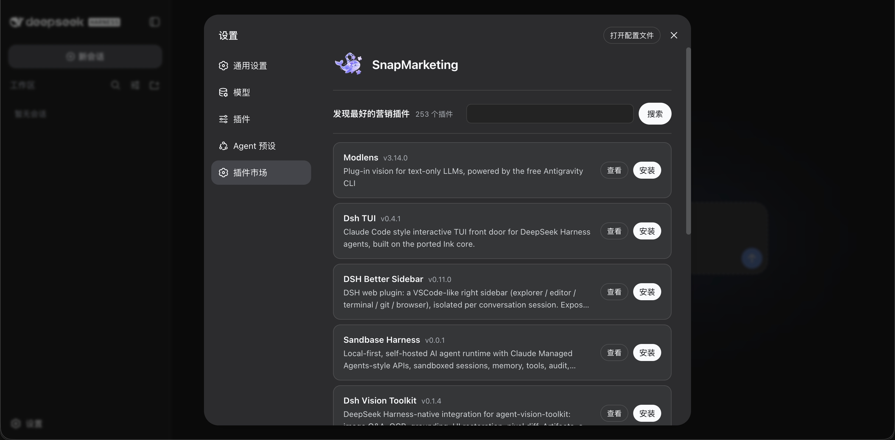

DSH / MARKETING PLUGIN HUB
dsh-snapmarketing Marketing tools for the work ahead.
dsh-snapmarketing is a focused plugin hub for DeepSeek Harness. Find useful tools, install them quickly, and keep working in one place.
dsh plugin --profile web add @snapmarketing/dsh-plugin-center
Then open dsh web, go to Settings, and choose Plugin Market.
01
PRODUCT VIEW

From discovery to workflow
A shorter path from finding a tool to using it in the work already in motion.
-
01
Discover
Find marketing plugins that fit the task in front of you.
-
02
Install
Copy the command, then open Plugin Market in dsh web.
-
03
Use
Bring the plugin into the workflow you already have.